A weather app that tells you how sure it is
Do I need a jacket if I walk out now?
Nimbus answers that one question, in plain words, before you open anything else. Every answer comes with how far it can be trusted. No account, no ads. Your position goes only to the services that supply the data, and our own cache sees only an area of about 2.5 km.
- No account
- No ads
- No tracking
- Never a made-up number
This tour shows the app in User mode, the way most people use it. Switch to Expert at the top for the sources, formulas and step lengths behind every number.
You are reading the Expert tour. Boxes with a dashed edge show what the app adds in Expert mode: source names, formulas and step lengths.
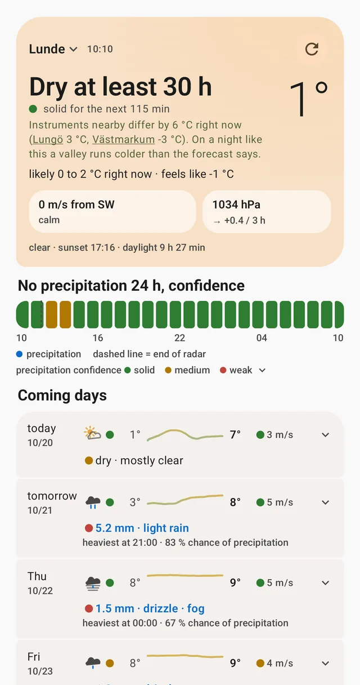
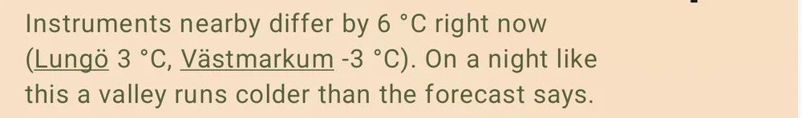
THE SHORT LIST
What stands out.
Eight things worth knowing before the tour. Each card opens its chapter.
Tells you how sure it is
Every answer carries a dot for how far to trust it, worked out from how many independent model runs agree. It is not the chance of rain.
Measured, worked out, forecast
A radar picture, a value worked out between two model hours and a model forecast are always shown differently. A measured picture never looks like a predicted one.
Notices when thermometers disagree
When the weather stations around you differ by 3 degrees or more, the top card says so and names the warmest and the coldest. Tap a name for the station, hold it for the raw reading.
Rain or snow, five layers, aurora
A radar with a time slider ten hours back and ahead as far as you choose. Rain, temperature, wind, cloud and the northern lights, rain told apart from snow, and a zoom for one thumb.
Fog from airport reports
A chart of how far one can see, with a line at one kilometre where fog begins. It takes the nearest airport's report first and says whether a figure is measured or from a model.
You decide what a jacket means
Seven lines, from hat and gloves to a windproof layer, are yours to move. They are the only numbers in the app that are not measured, because one person's jacket weather is another's shirt weather.
Grades its own forecasts
The app compares its rain nowcast with what the radar then showed, and in Expert mode it shows the record. Until there is enough of it, it says so instead of showing a percentage.
Widget and watch speak for the same place
The widget and the Wear OS watch carry the same confidence dots as the app and always speak for the same place. Each can be set to its own language.
01 · NOW
The answer first. The details when you ask.
Open the app and the top card already says what the next hours hold: dry, rain, wind, fog. One big temperature, one line of how it will really feel.
- Read the verdict - "Dry at least 30 h" or "Rain in 40 min", with a coloured dot for how far to trust it.
- See the next 24 hours as a strip - each hour coloured by how sure the forecast is, with the end of the radar's reach marked.
- Scan the coming days - lowest and highest temperature, wind, rain and a confidence dot per day. Open a day for more.
- Pull down to refresh, or tap the arrow. Tap the wind or pressure tile to jump straight to its chart.
Expert adds
- Under the verdict, how the confidence is worked out and why it dips about three hours out.
- The model behind the place, for example
MET Nordic 1 km, in the place list.
02 · TRUST
Honest, not confident.
Most weather apps give every number the same calm authority. Nimbus does not. When a source has nothing to say, it says so instead of showing a zero. When it is only guessing the hour between two real ones, it tells you that too.
These three are always shown differently, in both modes. A measured picture never looks like a predicted one.
Expert adds
- Confidence is ensemble agreement: how many of the independent runs say the same thing. In Czechia and Germany that is
ICON-D2, 20 members, for about two days, thenECMWF IFS025, 51 members. Elsewhere it is ECMWF. - It is not the chance of rain. A confident estimate of a thirty percent chance of rain is not a thirty percent confident estimate.
- A value the app cannot measure is shown as absent, never as a low confidence.
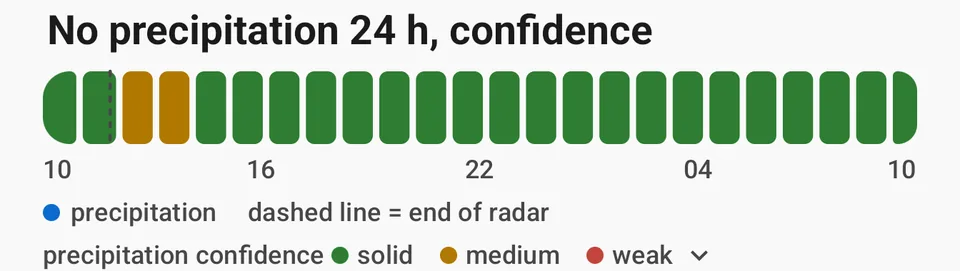
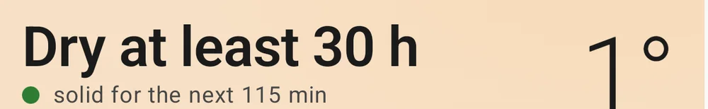
03 · NEARBY STATIONS
"My thermometer says 5, the app says 8."
On a clear, calm night the air can differ by several degrees within a few kilometres: the sea holds the coast up, cold air drains into valleys. When the weather stations around you disagree by 3 degrees or more, Nimbus says so on the top card and names the warmest and the coldest.
- Tap a station name to open that station on the national weather service's page, already selected.
- Press and hold it to open the raw measurement behind the number.
- It never corrects the forecast. It tells you what kind of night it is, so a cold garden is not a surprise.
Expert adds
- At least three stations within 60 km, each read within the last two hours. With fewer there is no answer, and the card stays silent instead of calling the air uniform.
- The three degrees is the same threshold the app uses for "needs a jacket or not".
- Source: the SMHI station network, hourly readings. Outside Sweden there is no answer yet.
Station names are links. A long press goes to the data itself.
04 · RADAR
The shape of what is coming.
A map with a time slider. Drag it back to see where rain has been, forward to see where it is heading. Four forecast layers sit next to the measured rain, and a fifth shows the aurora.
- Play, pause, scrub. The slider covers up to 10 hours back, and ahead as far as you choose, in the Nordic about two days.
- Pick a layer - rain, temperature, wind, cloud. Cloud can be split into low, mid and high.
- Rain or snow. One switch over the map separates the intensity from the kind of precipitation.
- Read the legend. The colour scale sits over the map and tells the unit. The temperature scale turns at freezing.
- One-handed zoom. Double-tap to step in, or double-tap and keep the thumb down, then slide.
- Under the map, a sentence in plain words: "Nearest rain 41 km to the north. Measured by radar. Not a forecast."
Expert adds
- The measured picture is the SMHI radar composite, frames five minutes apart. The rain rate is computed from reflectivity with
Z = 200·R^1.6, capped above 55 dBZ because hail reflects far more than water. - Forecast layers are MET's own model field, 1 km, drawn from its map server. Nobody publishes forecast radar images for free, so the app does not pretend to have them.
- The forward half of the scrubber is computed radar for the first hours, then the hourly model.
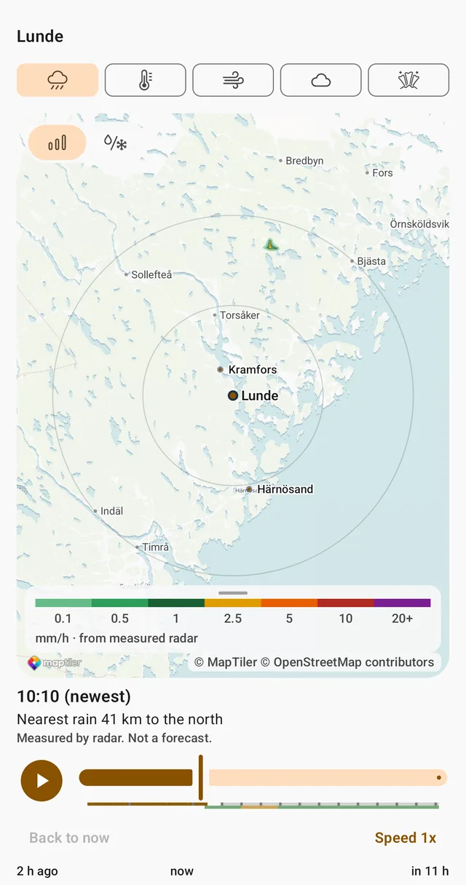
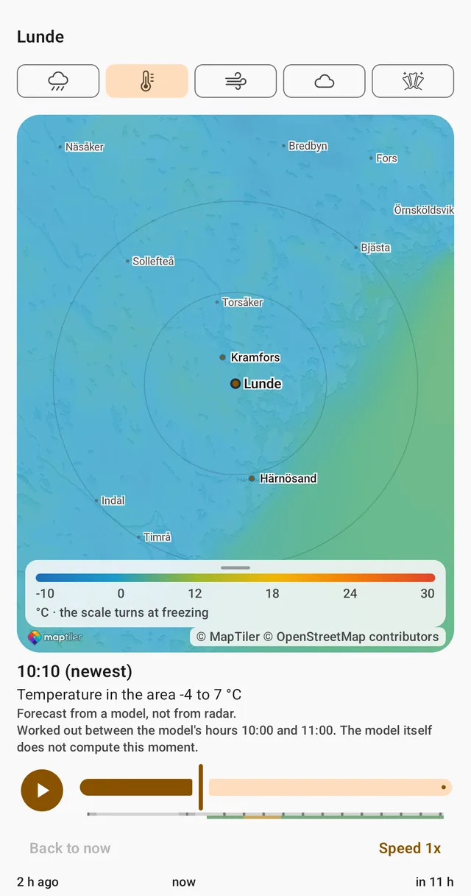
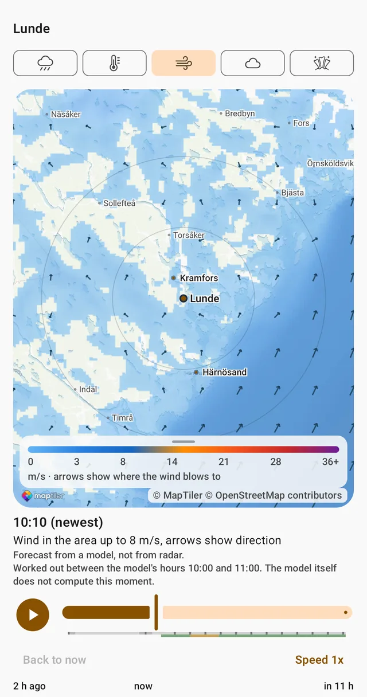
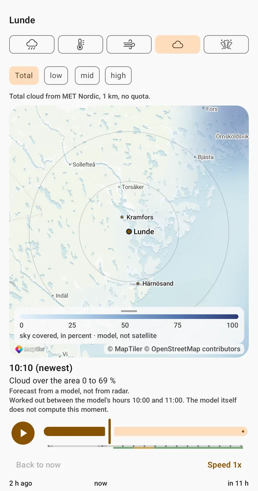
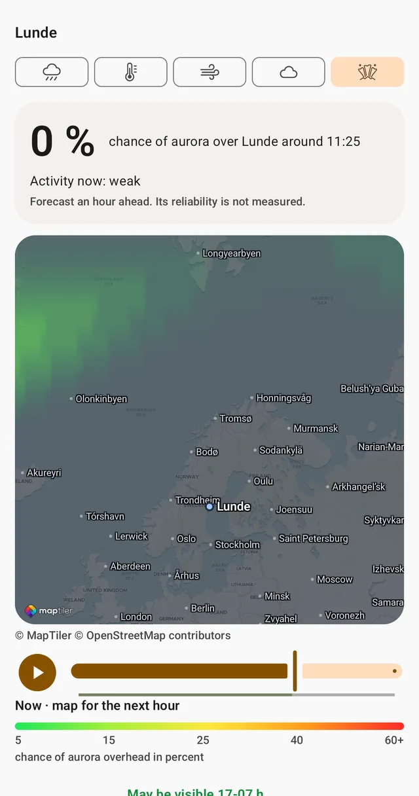
05 · CHARTS
See the day as a line.
Temperature, precipitation, wind and cloud, one under the other, on the same time axis. A red line marks now, and a note says how far back the data reaches and that the older part is the model.
- Choose the window - 12 hours, 24 hours, 3 days or 7 days.
- Point with one finger to read the exact value at that moment.
- Pinch with two fingers to stretch or move the window. A flat night opens its scale from twenty degrees to three, so the shape appears on its own.
- Coming from Now? Tapping the wind or pressure tile lands on its chart.
- Fog and visibility: a chart of how far one can see, with a dashed line at one kilometre where fog begins. It says if the figure is measured at an airport or comes from a model.
Expert adds
- The line above the charts says how far back the data reaches and that the older part is the model, not what the app saw.
- The value axis is computed from what is inside the window, so zooming never leaves a squashed line.
- Fog is a visibility under 1000 m. Up to now it is the METAR of the nearest airport within 30 km, named with its distance, ahead of it ICON-EU or ECMWF IFS. MET's own fog field missed valley fog twice and a model catches only part of it, so an airport goes first.
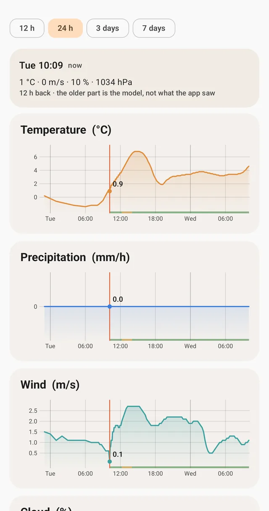
06 · DAILY BRIEF
Your day, part by part, and what to put on.
One screen that answers, for the morning, midday, afternoon and evening, what the weather holds and what to wear for it. It also compares each part with the same part of yesterday and shows last night's own range.
- The sun's arc with sunrise, sunset and the length of the day, and the day's lowest and highest moment.
- A rail from last night to tonight with a marker for now. Each part has its temperature, rain, wind, the dressing line, and yesterday.
- A morning notification at the time you choose, so the answer arrives before you leave.
- Tap a part to jump to the same time on Now.
Expert adds
- Yesterday's numbers come from the app's own record of weather that has already happened, read by place. A part with no covered reading shows nothing.
- With the exact-alarm permission the notification fires at the chosen minute, otherwise within the 30-minute refresh cycle. Settings says which one is active.
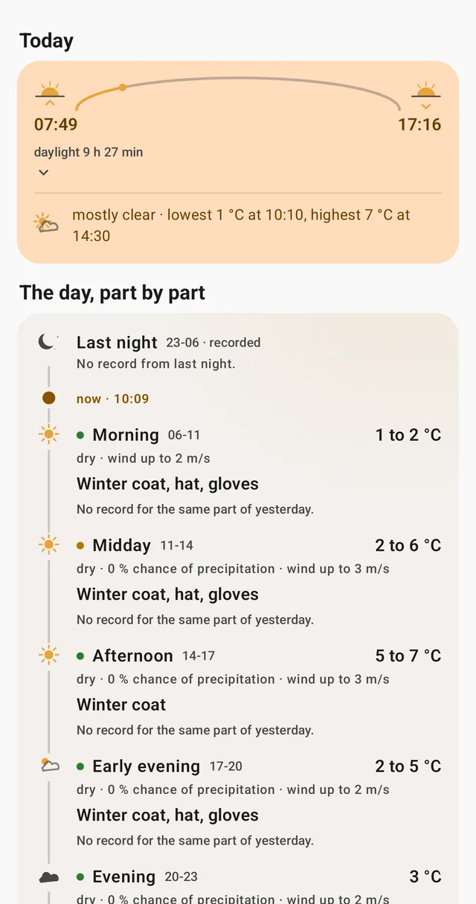
07 · WARNINGS
Official warnings, for every place you keep.
What is in force where you are and at each of your places, in the same order as in Settings. "Nothing in force" is stated outright, and it also says who is answering.
- Sweden: warnings from SMHI. Czechia and Germany: the national services through MeteoAlarm.
- Alerts for rain about to start, strong wind and official warnings, so you hear about them without opening the app.
Expert adds
- SMHI publishes one feed for the whole country. A warning covers a drawn area, so the app checks whether your place lies inside it.
- The wind alert uses the same gust threshold as the dressing advice, and is held back when the app is not confident enough to wake you.
- The log of notifications actually sent is shown here in Expert mode only.
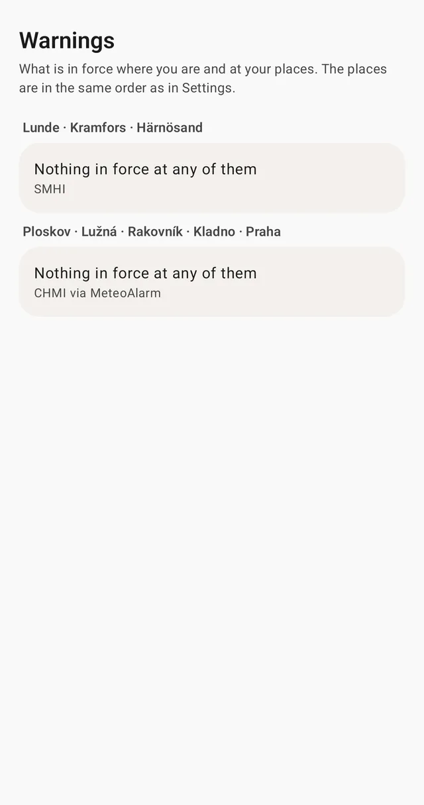
08 · AURORA
Will the sky light up tonight?
The last layer on the radar is not weather but the northern lights. It opens on a large night-toned map with the aurora oval, and above it the chance of seeing it over your place, in plain words.
- One number first: the chance of aurora overhead about an hour ahead, and the activity now as a word - weak, moderate, strong, very strong.
- The next nights, one row each: "Tonight", "Tomorrow night", then by weekday, with the hours when it may be visible.
- Real places on the map, so you can read the oval against towns you know.
Expert adds
- Data from NOAA SWPC: the OVATION model for the oval, the Kp index for activity. Activity ranges follow NOAA: Kp 0-2 weak, 3-5 moderate, 6-7 strong, 8-9 very strong.
- The oval is drawn continuous. Every drawn value lies between four published grid points. Colours: green from 5 %, yellow 25, red 60 and up.
09 · PLACES
One place, everywhere.
Pick the place the app is about, or let it follow you. Whatever you choose is the place the screens, the widget and the notifications all speak for, so they never disagree.
- Keep several places in the order you like. Five Czech places are there from the start, and Lunde, Kramfors and Härnösand for the Swedish home area.
- Follow my location and the forecast moves when you do. Return to the app and it asks where you are again.
- No invented street names. An address is only shown for a precise fix, because a street name for a rounded position would be made up.
Expert adds
- Under each place, the model that answers for it, for example
MET Nordic 1 km. - Which source speaks for a place is decided per coordinate from the model's real coverage, never by country.
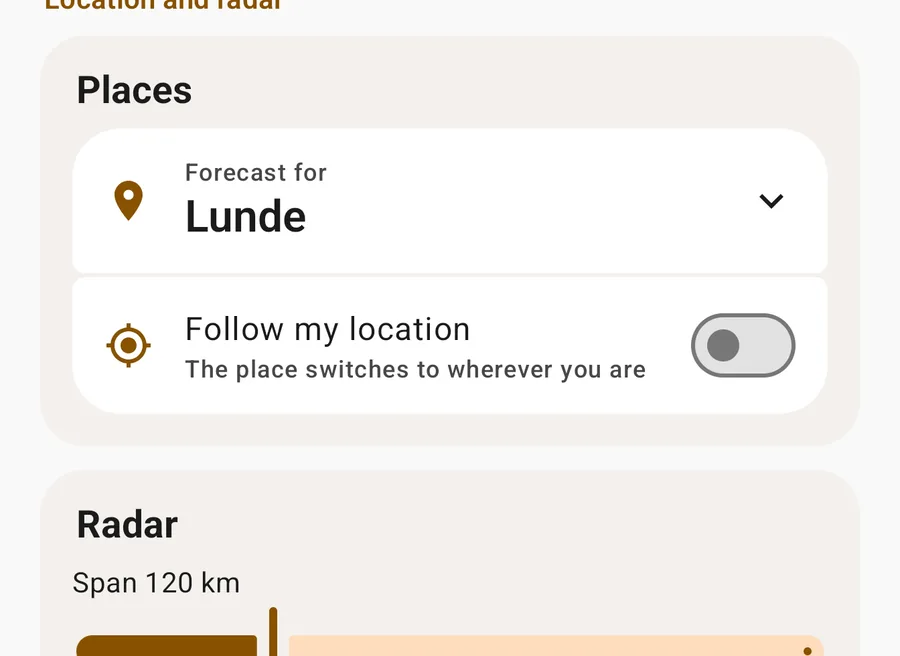
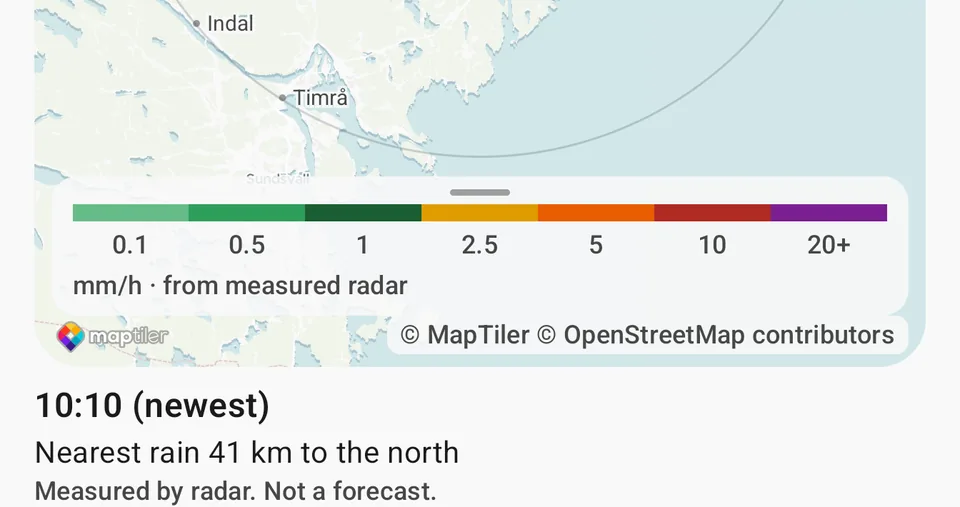
10 · WITHOUT OPENING THE APP
The answer where you already look.
The app's first job is to answer before you have put your shoes on. The widget and the watch exist for that, the map is third.
Home screen widget
The time, the date and the weather at one glance: the temperature now, how it feels and the next hours, each with a confidence dot. Choose its style, text size, place, bottom row and what a tap opens.
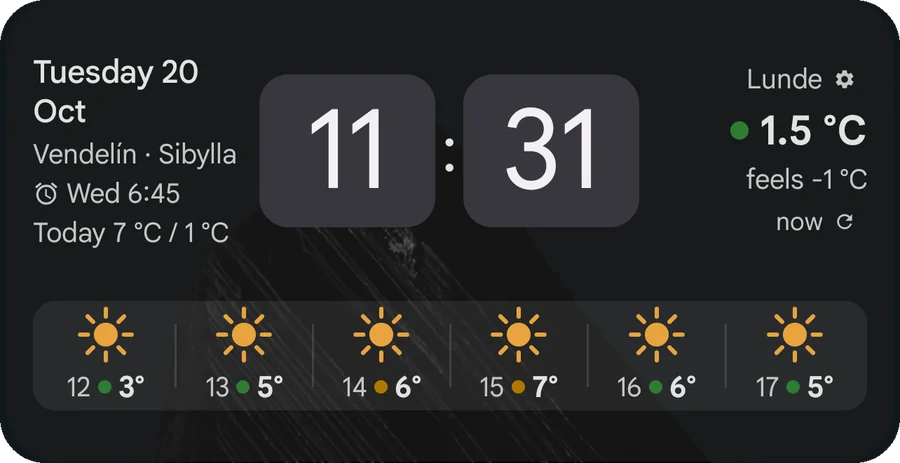
The widget on a home screen, in its large clock style.
Expert adds
The widget and notifications use the same place as the app. Their text has no plainer twin, it is the same in both modes.
Wear OS watch
The answer, temperature, wind, the hours and the week ahead, warnings and the sun, plus a tile and a watch face complication. The phone sends the data. Arrange the pages in Settings.
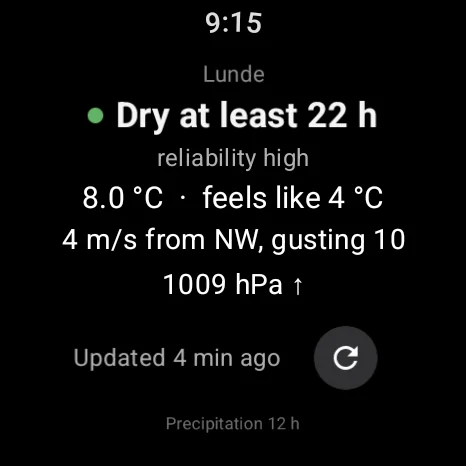
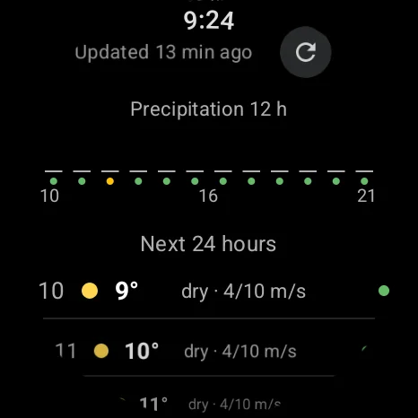
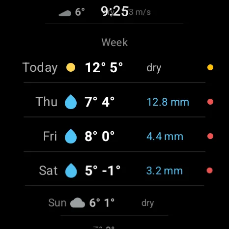
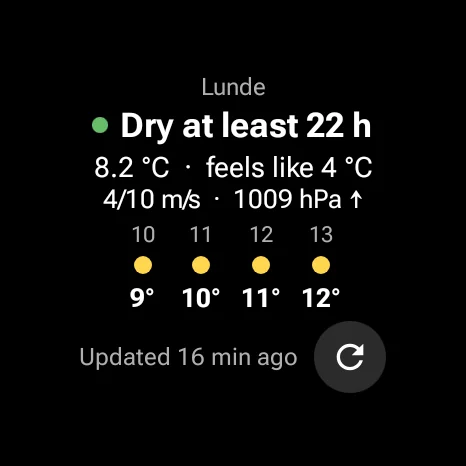
Expert adds
The watch opens on Now, then Hours, Week and Warnings in the order you set. The Warnings page appears only when something is known about warnings for the place.
11 · SOURCES
Where each number comes from.
One screen lists every source, what it provides and which one answers for the place you are looking at. If a source does not answer, the app says so.
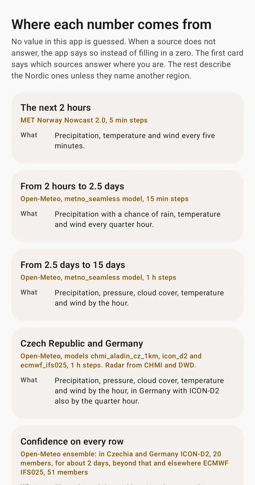
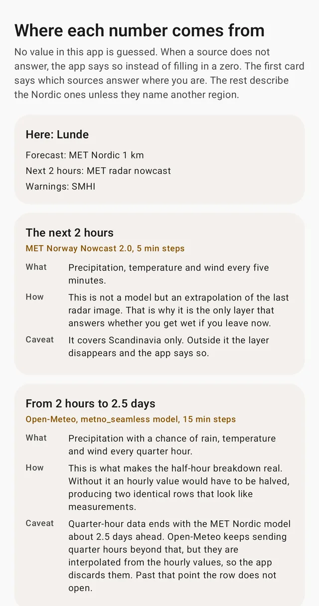
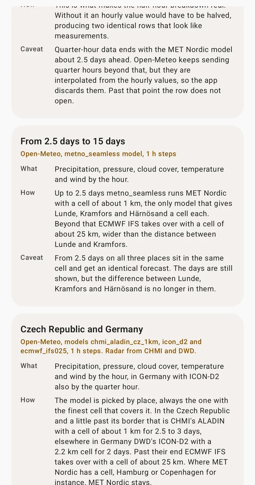
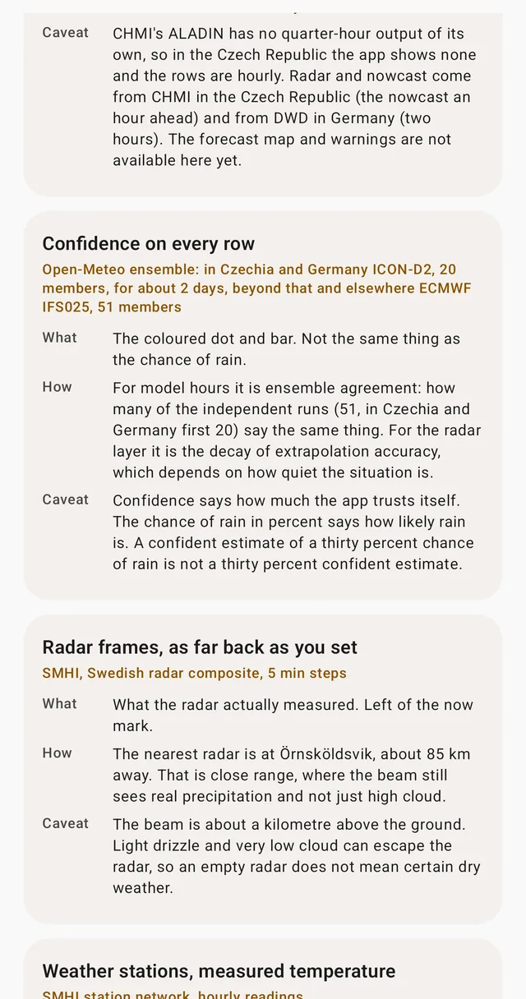
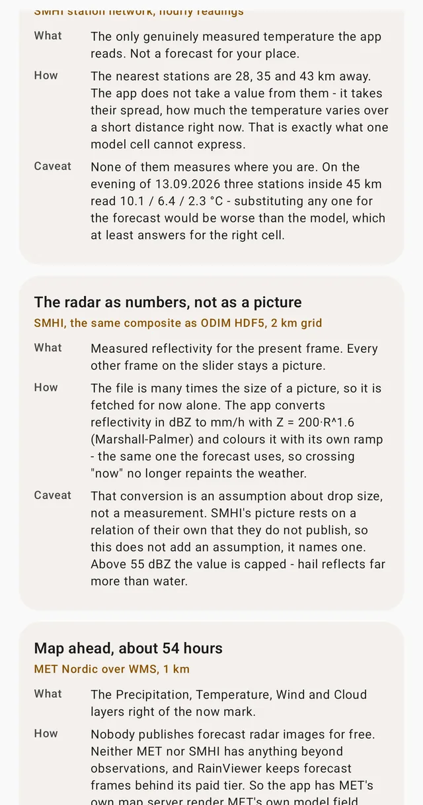
Switch to Expert at the top to see how each number is worked out, and what each source cannot tell you.
Each card has What it gives, How it is done and Caveat. The caveat is the honest part: what the source cannot tell you.
12 · WHERE IT WORKS
Best where it was built, good beyond it.
Nimbus was built for two areas and is most precise there. It also covers the rest of the Nordic countries, all of Czechia and Germany.
Nordic
A very fine forecast cell, a radar nowcast every five minutes for the next two hours, and official warnings from SMHI in Sweden. Most precise around Kramfors and Härnösand.
Expert adds
MET Nordic, a cell of about 1 km. Past the few days the fine models reach, ECMWF takes over and the app says from when.
Czechia
The Czech weather service's own very fine model and radar, with its own nowcast an hour ahead. Ploskov, Lužná, Rakovník, Kladno and Praha are in the places list from the start.
Expert adds
CHMI ALADIN, about 1 km, hourly. Warnings via MeteoAlarm.
Germany
The German weather service's model and radar, with a nowcast two hours ahead.
Expert adds
DWD ICON-D2 with a 2.2 km cell, quarter-hourly in Germany. Radar nowcast RADVOR.
The app speaks Czech, English and Swedish, switchable inside the app.
13 · USER AND EXPERT
As much detail as you want.
The same app in two levels. One switch in Settings, under "Level of detail". The page you are reading has the same switch at the top.
User
Shows what you need to decide.
- Plain words and one answer per screen
- Confidence dots and sentences
- Notes that say what kind of picture you are looking at
Expert
Adds the working behind a number.
- Source and model names
- Formulas and step lengths
- Notes on how things are worked out, and the caveats
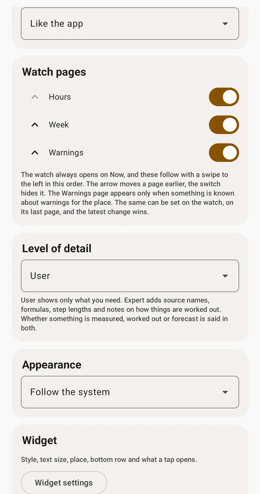
14 · SETTINGS
Make it yours.
Everything the app lets you set, in the order Settings lists it. Most of it is a switch or a choice between a few values.
Location and radar
- PlacesFind a town by name, add where you are now, drag to reorder and swipe your own place away to remove it, with an undo. Or let the app follow your location.
- Radar spanHow wide a patch of map the radar opens on, from 20 to 400 km.
- History on the sliderHow far back the time slider reaches: 1, 2, 3, 6 or 10 hours.
- How far aheadHow much of the forward half of the slider you want: none, 2, 6 or 12 hours, or everything up to 60 hours. A shorter range is one whose individual hours can be aimed at.
Expert adds
Frames are five minutes apart. With none ahead the slider shows only what the radar measured, nothing computed and nothing from the model.
Home screen
- Hourly modelShow or hide the hourly model on Now. The radar layer cannot be hidden, it is the point of the app.
- Range with valuesNext to temperature and wind, the band the value most likely falls in.
- Drag the marker in the chartDrag along the precipitation strip to pick a time and the day list below jumps to it. The strip sticks to the top while you scroll.
- Weather on the front cardThe top card wears what it describes: drops in rain, wind crossing it, a warm glow when it is clear. Kept faint so the text reads as well. Off, the card is plain.
Expert adds
The band is MET's own 10th to 90th percentile, not an estimate of the app's.
How to dress
Seven lines decide what the advice says. They are the only numbers in the app that are not measured, so they are yours to move.
- Five temperature linesBelow which you want a hat and gloves too, a winter coat, a jacket or a hoodie, a light jacket, and a hat. Each stops against its neighbours, so they cannot cross.
- Rain and windAbove how much rain you want something waterproof, from 0 to 5 mm, and above which gust a windproof layer, from 3 to 30 m/s.
- What decidesThe felt temperature, wind and humidity included, taken at its lowest in that part of the day. Rain and wind are judged separately from it.
Notifications and background
- Refresh in the backgroundEvery half hour, only on a network. It keeps the widget current, lets the rain warning fire and records what the weather was, so the charts look further back. Off, the app fetches only when you open it.
- Battery exemptionThe app shows whether the phone's battery optimisation is deferring the refresh and asks for the exemption. It works without it, but the widget and the history get gaps.
- Daily briefA morning notification with the day part by part. Set its time separately for weekdays and weekends. With the exact-alarm permission it arrives at that minute, otherwise within the half hour of the refresh.
- AlertsRain about to start, strong wind, the SMHI warnings and the daily brief each have a channel of their own in the phone's notification settings, so one can be silenced without the others.
Appearance and language
- LanguageFollow the phone, Czech, English or Swedish. It changes at once, without restarting.
- Widget and watch languageEach can speak a language other than the app's, or simply like the app.
- Watch pagesThe watch always opens on Now. Choose which of Hours, Week and Warnings follow and in what order. The same can be set on the watch and the latest change wins.
- Level of detail and appearanceUser or Expert, the same switch as at the top of this page. Appearance follows the system or stays light or dark.
Widget
The widget has a settings screen of its own with two tabs, Look and Taps. It opens from this card in Settings or from the widget itself.
- Place and styleThe app's place or another of your own. Style: by wallpaper, follow the phone, dark or light. By wallpaper puts a dark background on a dark wallpaper and a light one on a light wallpaper.
- Sizes and opacityText size, clock size and how opaque the background is. Opacity stops where the faintest text would stop being readable.
- Name daysThe Czech and Swedish calendars, ticked in the order they should appear, or none.
- Bottom row and what to showThe next six hours with confidence or the rest of the day in a sentence. Alarm, refresh button, feels like, pressure and its trend, and the answer under the clock can each be shown or hidden.
- What a tap opensHours, minutes, the alarm and the date each open an app you choose, by default the clock and the calendar. The weather now, the hour strip and the sentence open Now, Radar, Charts or Brief in Nimbus.
How the app works
Shown in Expert mode only.
- Which nowcast works hereThe app's own rain forecast from radar against the national service's, for the same minutes and graded by the same radar. Until there is enough record it decides nothing and MET stays on screen.
- AccuracyHow accurate the app has been here, measured against what the radar actually showed, with the number of comparisons. Until there are numbers it says it has only started recording.
- SourcesA button opens the Sources screen with where each number comes from.
Switch to Expert at the top to see a last group here: how the app grades its own forecasts.